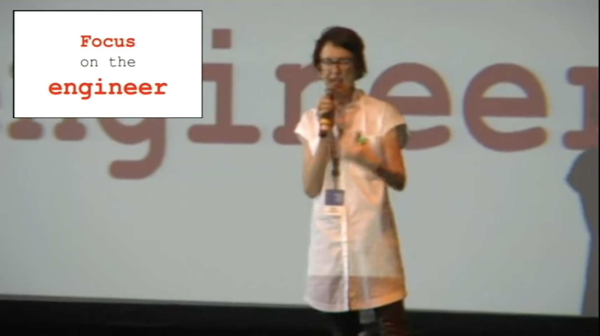
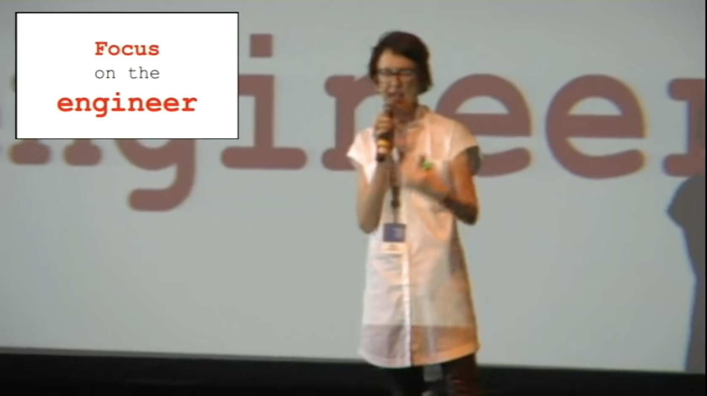

DOCS
AS
CODE
@che55er | che55er.io
About Me


Guides through Drawings
Topics
🔠Introduction  📚 Background  🚀 Examples
Fantastic source 👇

Docs as Code?
Documentation as Code (Docs as Code) refers to a philosophy that you should be writing documentation with the same tools as code.
Source: Write the Docs
Docs as Code uses...
Source: Write the DocsğŸ Issue Trackers
🌳 Version Control (git)
🔤 Plain Text Markup
(Markdown, reStructuredText, Asciidoc)
💬 Code Reviews
✅ Automated Tests
ğŸ Issue Trackers
Align tracking the work of documentation with code. (have it live in the same queue)
🌳 Version Control (git)
Enable docs and code in same changeset
(like your tests)
Enable concurrent development branches
🌈 Enable all the feature of version controls for documentation!
🔤 Plain Text Markup
Enable all the features of your code editors in documentation (compare, find/replace, track in version control)
💬 Code Reviews
Enable discussions with code using the same toolchain (line-by-line comments, suggestions they can apply, CODEOWNERS)
✅ Automated Tests
Enable static analysis tests on documentation (status checks on pull requests)
Creating the Culture of Documentation
Twitter: 2014

📽 Watch it!
Documentation, Disrupted
How Two Technical Writers Changed Google Engineering Culture
Google: 2015
 
📽 Watch it!
How we are solving internal technical documentation at Spotify
Spotify: 2019
📽 Watch it!
Problematic Signals
ğŸ Islands of documentation
(MediaWiki, Confluence, Office 365, READMEs, GitHub Pages)
📜 Documentation decay due to islands
🔠Searchability challenges
🤷‍♂️ Different process for maintaining (vs. with code)
😠Lack of trust on the content
ğŸ Islands of documentation
(MediaWiki, Confluence, Office 365, READMEs, GitHub Pages)
📜 Documentation decay due to islands
🔠Searchability challenges
ğŸ Islands of documentation
(MediaWiki, Confluence, Office 365, READMEs, GitHub Pages)
📜 Documentation decay due to islands
🔠Searchability challenges
🌠A centralized build system for documentation that can enable content through a common convention
🤷‍♂️ Different process for maintaining (vs. with code)
🤷‍♂️ Different process for maintaining (vs. with code)
🧰 Enable documentation to exist closer to the code and toolchain
😠Lack of trust on the content
😠Lack of trust on the content
🪄 Make it easy for anyone to contribute (help them along the way)
But, not everyone has GitHub access…
or knows Markdown.
🤷‍♂️
Examples!
GitHub Actions
Apples
$1
7
Oranges
$2
18
Kiwi
$3
1